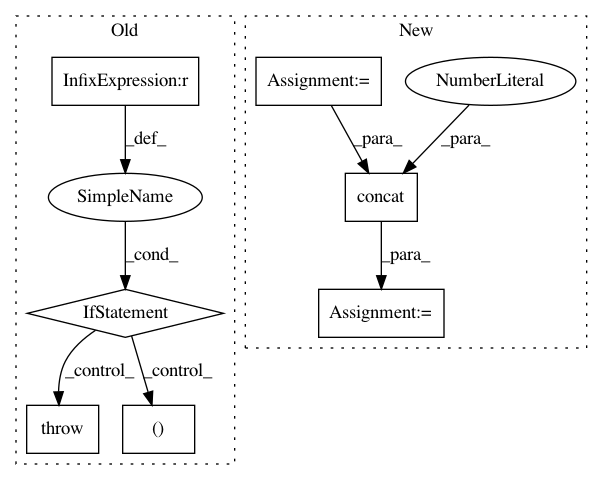

190065554d8905884dff948e4bb655d431d7eec3,ggplot/stats/stat.py,stat,_calculate_groups,#stat#Any#Any#,81
Before Change
// fine and concat. This is really not expected to fail
assert(all(
stats["group"].as_matrix() == unique["group"].as_matrix()))
if len(stats) == len(unique):
stats = pd.concat([stats, unique.loc[:, missing]],
axis=1)
elif len(unique) == 1:
for col in unique:
stats[col] = unique[col].iloc[0]
else:
raise GgplotError("Could not merge stats. Report bug")
// Note: If the data coming in has columns with non-unique
// values with-in group(s), this implementation loses the
// columns. Individual stats may want to do some preparation
// before then fall back on this implementation or override
// it completely.
return stats
def __radd__(self, gg):
// Create and add a layer to ggplot object
After Change
stats = []
for _, old in data.groupby("group"):
new = self._calculate(old, scales)
unique = uniquecols(old)
missing = unique.columns - new.columns
u = unique.loc[[0]*len(new), missing].reset_index(drop=True)
df = pd.concat([new, u], axis=1)
stats.append(df)
stats = pd.concat(stats, axis=0, ignore_index=True)
In pattern: SUPERPATTERN
Frequency: 3
Non-data size: 7
Instances
Project Name: has2k1/plotnine
Commit Name: 190065554d8905884dff948e4bb655d431d7eec3
Time: 2015-04-20
Author: has2k1@gmail.com
File Name: ggplot/stats/stat.py
Class Name: stat
Method Name: _calculate_groups
Project Name: deepmind/sonnet
Commit Name: ef86d2e73e7ce03c4184a04a336d96caf661269a
Time: 2017-07-03
Author: noreply@google.com
File Name: sonnet/python/modules/conv.py
Class Name: Conv1DTranspose
Method Name: _build
Project Name: analysiscenter/batchflow
Commit Name: d37727ed2e1f8474e2c1ceb1da5719c1b81f4ab8
Time: 2019-03-04
Author: Tsimfer.SA@gazprom-neft.ru
File Name: batchflow/models/tf/deep_galerkin.py
Class Name: DeepGalerkin
Method Name: _make_inputs